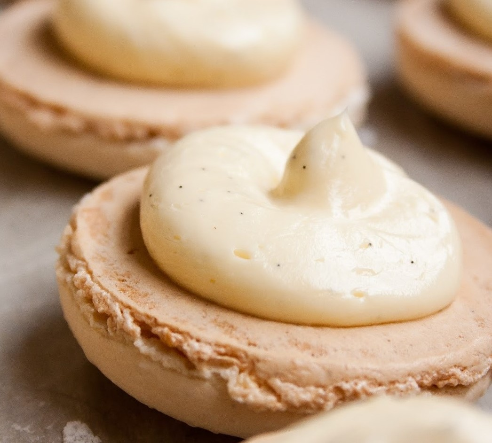

BakeHub
Danielle's Favorite Baking Recipes
Vanilla Buttercream Macaron Filling

This is the easiest part about making macarons!
Difficulty: Easy
- 0.25 cup of room-temperature, unsalted butter
- 0.75 cup plus 2 tablespoons of confectioners' sugar
- 1 teaspoon of milk
- 1 teaspoon of vanilla extract
- Using an electric mixer, cream the room-temperature butter until smooth.
- Mix in the confectioners' sugar, milk, and vanilla extract until light and fluffy.
- The vanilla filling may be too soft to support the top cookie of the macaron. If it is, scoop the filling into a piping bag and let it slightly harden in the refrigerator.
- Once the the filling is thick enough to support the macaron cookie, pipe about a teaspoon of filling onto a macaron cookie. Then, sandwich another macaron cookie on top.
- After all your hard work it may be hard to resist, but put the completed macarons in a container and allow them to sit overnight in the refrigerator. This allows for the flavor of the filling to meld with the macaron cookies.
Recipe adapted from Ahead of Thyme